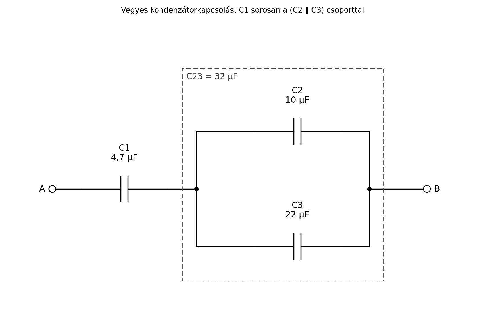

Adott három kondenzátor:
,
,
.
A
és
párhuzamosan van kötve, ezzel a párhuzamos csoporttal a
sorba kapcsolódik. Mennyi az eredő kapacitás?
Az alábbi rajz ezt a kapcsolást mutatja az A és a B kapocs között. A
két pont a csomópontokat jelöli: itt ágazik szét és fut össze a
és a
ága; a szaggatott keret a párhuzamos csoportot fogja össze.

Vegyes kondenzátorkapcsolás: C1 sorosan a
(C2 ∥ C3) csoporttal - Előbb a párhuzamos csoportot vonjuk össze (C23 =
C2 + C3 = 32 µF), utána a C1 és a C23 soros eredőjét számoljuk (Ce ≈ 4,1
µF).
A rajzot belülről kifelé olvassuk: először a keretbe zárt párhuzamos
csoportot vonjuk össze egyetlen
kapacitássá, majd ezt a
-gyel
soros kapcsolásként kezeljük.
Megoldás.
A párhuzamos rész eredője:
A soros eredő:
Ellenőrzés. A soros eredő kisebb, mint a legkisebb
sorba kötött elem
(),
tehát a nagyságrend helyes.
5.2.2 2. kidolgozott példa –
időállandó és biztonsági várakozás
Egy
kapacitású kondenzátort
kisütőellenálláson keresztül sütünk ki a kezdeti
feszültségről. Mennyi az időállandó, és mennyi idő alatt csökken a
feszültség a kiindulási érték
-ára?
Megoldás.
Az időállandó:
A
eléréséhez
idő kell:
Ellenőrzés.
után a feszültség
,
ami gyakorlatilag kisütött állapot, de mindig mérővel győződjünk meg
róla.
5.2.3 2/b kidolgozott példa –
mennyi ideig kell várni?
A gyakorlatban nem a
egész számú többszörösei érdekelnek, hanem az, hogy a feszültség mikor
ér el egy adott értéket. A két exponenciális összefüggést az időre
rendezzük (a számológépen az ln gomb a természetes
logaritmus):
Ellenőrzés: ha kisütéskor
,
akkor
.
A feszültség a felére
alatt csökken (felezési idő).
A) Kisütési várakozás (példaadat). Egy tápegység
pufferkondenzátora
,
a beépített kisütőellenállás
,
a kezdeti feszültség
.
Mennyi idő alatt csökken
alá? (Az 50 V itt tanulási küszöb; ellenőrizendő: aktuális szabvány és
munkavédelmi előírás.)
Ellenőrzés:
-nál
,
tehát a kb. 62 s hihető. Tanulság: várj legalább a
számolt ideig, utána mérj – ha a kisütőellenállás
szakadt, a várakozás semmit nem ér.
B) RC-időzítő (példaadat).
,
,
,
a kapcsolófokozat
-nál
billen.
Ellenőrzés:
kicsit több mint
,
ezért
kicsit nagyobb
-nál.
Gyakorlásként oldd meg a lenti rögzített feladatsor 6. feladatát (6 V
elérése, 0,693 s) és 7. feladatát (20 V elérése, 18,5 s) előbb a kulcs
nélkül.
5.2.4 3. kidolgozott példa –
kisütőellenállás méretezése
Egy
kapacitású kondenzátor kezdeti feszültsége
.
Olyan kisütőellenállást keresünk, amelynél
kisebb, mint
másodperc, és az ellenállás kezdeti árama nem haladja meg a
-t.
Megoldás.
A
feltételből:
Mivel
,
így:
A kezdeti áramra vonatkozó feltétel:
Ebből:
A két feltételt egyszerre
teljesíti. Válasszunk például
ellenállást! Ekkor:
Az ellenállás kezdeti csúcsteljesítménye:
A teljesítmény azonban az exponenciális görbe szerint csökken, ezért
tartós üzemre nem kell a csúcsteljesítményt állandóan elviselni, de a
kisütőellenállás kiválasztásánál mindig a gyártói adatlapot kell
figyelembe venni (ellenőrizendő: gyártói adatlap, túlterhelési
jelleggörbe).
5.2.5 Gyakorlati útmutató
5.2.5.1 Kondenzátor biztonságos
kisütése és egy RC-időzítő megépítése
Cél. A tanuló tanműhelyi környezetben mérje meg a
kondenzátor töltési és kisütési feszültséggörbéjét, és győződjön meg az
időállandó számított értékéről.
Eszközök és anyagok. Tanműhelyi törpefeszültségű
tápegység,
;
multiméter; stopper vagy oszcilloszkóp; két
-os
ellenállás
(
töltő-,
kisütőellenállás);
kondenzátor; két kapcsoló
(,
);
mérőzsinórok; védőszemüveg.
Biztonsági korlát. Ez a feladat csak tanműhelyi,
törpefeszültségű környezetre vonatkozik, jogosult oktató felügyeletével.
Hálózati feszültségen önállóan ne gyakorolj. A kondenzátort a feladat
előtt és után is kisütött állapotba kell hozni.
Lekapcsolás. Győződj meg arról, hogy a tápegység le
van kapcsolva.
Visszakapcsolás elleni biztosítás. A tápegységet
úgy helyezd el, hogy a csatlakozóját véletlenül se lehessen
visszacsatlakoztatni.
Feszültségmentesség ellenőrzése. A multiméterrel
ellenőrizd, hogy a tápegység kimenete feszültségmentes.
Áramkör összeállítása. Kösd össze a kapcsolást az
előző ábra szerint: a tápegység pozitív kimenete a kapcsolóval, a
kapcsoló az
ellenállással, az ellenállás a kondenzátor pozitív kivezetésével, a
kondenzátor negatív kivezetése a tápegység negatív kimenetével. A
kondenzátorral párhuzamosan kösd be az
kapcsoló és az
ellenállás soros ágát;
kezdetben legyen nyitva. A multimétert feszültségmérésre kapcsolva kösd
a kondenzátor kapcsaira párhuzamosan.
Töltés mérése. Kapcsold be a tápegységet, zárd az
kapcsolót
(
nyitva), és mérd a feszültséget. A várt görbe: a feszültség
idő alatt kb.
-ra
nő. A megadott értékekkel
.
Tehát
s után a feszültség kb.
,
s után pedig kb.
legyen.
Kisütés mérése. Nyisd az
kapcsolót (a kondenzátor ekkor töltve marad), majd zárd az
kapcsolót: a kondenzátor az
kisütőellenálláson át sül ki. Indítsd a stoppert az
zárásakor, és figyeld a feszültség csökkenését; a mérés után kapcsold ki
a tápegységet. A megadott értékekkel
s után
,
s után
marad.
Feszültségmentesítés. A mérés végén ismét süsd ki a
kondenzátort, és multiméterrel ellenőrizd, hogy a kapocsfeszültség
gyakorlatilag nulla.
A 7. lépésben – és minden olyan esetben, amikor egy kondenzátort a
kapcsolásból kiveszel – a kisütés sorrendje kötött. Az alábbi képsor ezt
mutatja a labormodellen (a feltöltött kondenzátor itt 24 V-os példa): 1.
a tápegység kikapcsolva, a csatlakozója kihúzva és nálad; 2. a
kapocsfeszültség mérése – a kondenzátor még töltött lehet; 3. kisütés a
szigetelt csipeszes
-os
kisütőellenálláson át, legalább
-ig;
4. ismételt mérés: csak ≈ 0 V után érj a kivezetésekhez. Az ötödik panel
a tilos megoldást mutatja.
Statikus változat (mint a PDF-ben)
Kondenzátor biztonságos kisütése törpefeszültségű
labormodellen négy lépésben és a hibás rövidre zárás (sematikus
rajz)
A csavarhúzóval vagy vezetékdarabbal végzett rövidre zárás nagy
kisütőáramot, ívet és beégett kivezetést okoz, ezért tilos. A kijelzett
24,0 V és 0,0 V szemléltető érték, nem mérési eredmény. A HTML-kiadásban
a lépések lejátszhatók (▶), vagy panelenként kiválaszthatók.
Ellenőrzési pontok. A számított és mért
időtartamnak közelítőleg egyeznie kell; az eltérés tipikusan az
alkatrész-tűrésből vagy a multiméter belső ellenállásából adódik.
Dokumentálás. Töltsd ki a jegyzőkönyvet. Fejléc:
dátum, név, a tápegység mért
feszültsége,
névleges és mért értéke,
névleges értéke, a multiméter típusa és bemeneti ellenállása. Az adatsor
a töltésre,
és
esetén:
Töltési mérés jegyzőkönyve (12 V-os példa)
(s)
Számított
(V)
Mért
(V)
Eltérés (%)
0
0
1
7,59
2
10,38
3
11,40
4
11,78
5
11,92
Kiértékelés. Elfogadási feltétel (tanulási érték):
.
Az elektrolitkondenzátor tűrése akár
is lehet, ezért határozd meg a mért időállandót is (az az idő, amikor
),
és számold vissza:
.
Mérési hiba: a multiméter terhel. A voltmérő
bemeneti ellenállása a kondenzátorral párhuzamos. A forrás, az
és az
helyettesítő generátora (tankönyv, 4.4) szerint a végfeszültség
,
az időállandó pedig
.
Példa:
,
,
:
a végfeszültség
(91 %), az időállandó
a számított 10 s helyett. A labor
-os
értékénél a hatás kb. 0,1 %. Szabály: ha
,
a hiba (legfeljebb kb. 1 %) általában elhanyagolható. A belső ellenállás
szerepét a Valódi feszültségforrás: üresjárás, rövidzárás és illesztés
(tankönyv, 4.5) alfejezet mutatta be.
5.2.6 Önellenőrzés
Igaz vagy hamis? A soros kondenzátorok eredő kapacitása mindig
nagyobb, mint bármelyik elemé. Válaszodat indokold!
Számold ki a
időállandót, ha
és
!
Hány
idő alatt csökken a kondenzátor feszültsége a kiindulási érték kb.
-ára?
Miért nem szabad a nagy kapacitású, feltöltött kondenzátort
közvetlenül rövidre zárni?
Melyik üzemállapotban viselkedik a kondenzátor egyenáramú
szakadásként?
Egy szerelő azt mondja: „a készüléket lekapcsoltam, a kondenzátoron
már nem lehet feszültség”. Mi a hiba ebben a gondolatban?
Hány
idő alatt feleződik a kisülő kondenzátor feszültsége?
5.2.7 Gyakorló generátor:
kondenzátorkapcsolások és RC-tag
A soros és a párhuzamos képlet felcserélése és az előtaghiba
(F,
k)
a fejezet leggyakoribb hibái, ezért ezeket érdemes sok változaton
begyakorolni. A HTML-kiadás gyakorlója három szinten ad véletlen
feladatot: (A) két kondenzátor eredője és az időállandó, (B) öt
különböző vegyes kapcsolás rajzzal és a feszültségmegoszlás, (C) a
feszültség adott időpontban, az idő adott feszültséghez töltésnél és
kisütésnél, valamint a kisütőellenállás megengedett tartománya, mint a
3. kidolgozott példában. A lap ±1 %-os tűréssel ellenőriz, felismeri a
tipikus hibákat (soros ↔︎ párhuzamos képlet, felcserélt
feszültségmegoszlás, előtaghiba, a töltés és a kisütés képletének
felcserélése), és lépésenként megmutatja a megoldást. Az alábbi kép egy
mintafeladatot mutat a megoldásával.
Statikus változat (mint a PDF-ben)
Gyakorló generátor: kondenzátorkapcsolások és RC-tag –
mintafeladat lépésenkénti megoldással
Oldd meg az alábbi rögzített feladatsort is; a vegyes kapcsolásokat
előbb rajzold le az 1. kidolgozott példa ábrájának mintájára.
Rögzített feladatsor. A HTML-kiadás gyakorlója
végtelen sok hasonló feladatot ad; az alábbi sor rögzített, a
megoldókulcs a végén található.
(A) Két kondenzátor, C1 = 10 µF és
C2 = 22 µF sorosan kapcsolódik, a soros ágra U = 100 V
feszültséget kapcsolunk. Mennyi az eredő kapacitás és az egyes
kondenzátorok feszültsége?
(C) Egy RC-tagban R = 10 kΩ, C = 100 µF. A kisütött
kondenzátort U0 = 12 V-ra kapcsoljuk. Mennyi τ, és mennyi idő
múlva éri el a feszültsége a 6 V-ot?
(C) Egy RC-tagban R = 47 kΩ, C = 220 µF. A kisütött
kondenzátort U0 = 24 V-ra kapcsoljuk. Mennyi τ, és mennyi idő
múlva éri el a feszültsége a 20 V-ot?
(C) Egy RC-tagban R = 1 kΩ, C = 470 µF. Az
U0 = 48 V-ra töltött kondenzátort kisütjük. Mennyi τ, és
mennyi idő alatt csökken a feszültsége 5 V-ra?
(C) Egy RC-tagban R = 100 kΩ, C = 330 µF. Az
U0 = 325 V-ra töltött kondenzátort kisütjük. Mennyi τ, és
mennyi idő alatt csökken a feszültsége 50 V-ra?
(A) Egy RC-tagban R = 22 kΩ, C = 47 µF. Mennyi az
időállandó, és mennyi idő az 5τ?
Megoldókulcs.
A rögzített feladatsor megoldókulcsa
Feladat
Szint
Eredmény
1.
A
Ce = 6,87 µF; U1 = 68,8 V; U2 =
31,3 V
2.
B
Ce = 36,7 µF
3.
B
Ce = 4,1 µF
4.
B
Ce = 17,8 µF
5.
B
Ce = 4,07 µF
6.
C
τ = 1 s; t = 693 ms
7.
C
τ = 10,3 s; t = 18,5 s
8.
C
τ = 470 ms; t = 1,06 s
9.
C
τ = 33 s; t = 61,8 s
10.
A
τ = 1,03 s; 5τ = 5,17 s
Kidolgozott megoldások.
Soros kapcsolás: Ce = C1·C2 /
(C1 + C2) = 10 · 22 / (10 + 22) µF = 6,87
µF.
Ellenőrzés: a soros eredő kisebb a legkisebb elemnél (10 µF).
Töltés (sorosan mindkettőn azonos): Q = Ce · U = 6,87 µF ·
100 V = 687 µC.
U1 = Q / C1 = 68,8 V, U2 = Q /
C2 = 31,3 V (a kisebb kapacitásra jut a nagyobb feszültség;
összegük 100 V).
Párhuzamosan összeadódnak: Ce = 4,7 µF + 10 µF + 22 µF =
36,7 µF.
τ = R · C = 10 kΩ · 100 µF = 1 s.
Töltés: uC = U0(1 − e−t/τ) → t = τ ·
ln(U0 / (U0 − uC)).
t = 1 s · ln 2 = 1 s · 0,6931 = 693 ms.
τ = R · C = 47 kΩ · 220 µF = 10,3 s.
Töltés: uC = U0(1 − e−t/τ) → t = τ ·
ln(U0 / (U0 − uC)).
t = 10,3 s · ln 6 = 10,3 s · 1,792 = 18,5 s.
τ = R · C = 1 kΩ · 470 µF = 470 ms.
Kisütés: uC = U0 e−t/τ → t = τ ·
ln(U0 / uC).
t = 470 ms · ln 9,6 = 470 ms · 2,262 = 1,06 s.
τ = R · C = 100 kΩ · 330 µF = 33 s.
Kisütés: uC = U0 e−t/τ → t = τ ·
ln(U0 / uC).
t = 33 s · ln 6,5 = 33 s · 1,872 = 61,8 s.
τ = R · C = 22 000 Ω · 47·10−6 F = 1,03 s.
A gyakorlatilag teljes töltéshez/kisütéshez 5τ = 5,17 s kell (99,3
%).
5.2.8 Feladatok
1. feladat (A). Két kondenzátor,
és
,
sorba van kötve. Mennyi az eredő kapacitás?
2. feladat (A). Számold ki az időállandót, ha
és
!
3. feladat (B). Az 1. kidolgozott példa ábrája
szerinti kapcsolásban
(
sorosan a
és
párhuzamos csoportjával)
és
,
de
.
Mennyi az eredő kapacitás?
4. feladat (B). Egy
kondenzátort
ellenálláson keresztül sütünk ki
feszültségről. Mennyi a feszültség
idő elteltével?
5. feladat (C). Egy
kondenzátor kezdeti feszültsége
.
Válassz olyan kisütőellenállást, hogy
legyen, és az ellenállás kezdeti csúcsteljesítménye ne haladja meg a
-ot!
Ellenőrizd a feltételeket a választott értékre!
6. feladat (D). Egy tápegységben egy
kapacitású szűrőkondenzátort találsz, amelynek a feszültsége a
kikapcsolás után
-ot
mutat. A rendelkezésedre áll egy
,
névleges teljesítményű ellenállás. Indokoltan használható-e ez a
kondenzátor kisütésére? Végezd el a számítást, és mondd el a mérési
sorrendet a biztonságos kisütéshez!
7. feladat (B).
és
sorosan kapcsolódik
egyenfeszültségre. Számítsd ki az eredő kapacitást, a töltést és a két
kondenzátor feszültségét!
8. feladat (C). Egy RC-tagot
és
alkot, a kondenzátor feszültségét
bemeneti ellenállású multiméterrel méred. A forrásfeszültség hány
százalékáig töltődik fel a kondenzátor, és mekkora lesz a mért
időállandó a számított érték helyett?
5.2.9 Megoldások
Önellenőrzés – válaszok
Hamis. Soros kapcsolásnál az eredő kapacitás
reciproka az egyes kapacitások reciprokainak összege, így a soros eredő
mindig kisebb a legkisebb sorbakötött kapacitásnál.
.
maradék feszültség kb.
alatt érhető el (pontosabban
alatt
).
Mert a kezdeti áram
szinte végtelen nagy lehet, ami ívet, hevülést, a kondenzátor vagy a
rövidzáró eszköz károsodását okozhatja.
Egyenáramú tartós állapotban, amikor a kondenzátor feltöltődött, és
áram már nem folyik.
A hiba az, hogy a kondenzátor a lekapcsolás után is töltött maradhat
(tárolja a töltését), tehát tárolhat feszültséget. A
feszültségmentességet mindig mérni kell, és a kondenzátort szabályosan
kisütni.
,
ezért
.
1. feladat (A) megoldása.
A soros kapcsolás képlete:
Ellenőrzés:
,
tehát a soros eredő valóban kisebb a legkisebb elemtől.
2. feladat (A) megoldása.
3. feladat (B) megoldása.
A párhuzamos rész:
A soros eredő:
Ellenőrzés:
.
4. feladat (B) megoldása.
Az időállandó:
elteltével a kisütő feszültség:
5. feladat (C) megoldása.
A
feltételből
,
tehát:
A csúcsteljesítményre:
Tehát
teljesülhet. Válasszunk
értéket! Ekkor:
6. feladat (D) megoldása.
Az
ellenállással az időállandó:
A kezdeti áram:
A kezdeti csúcsteljesítmény:
A kezdeti csúcsteljesítmény
,
de ez gyorsan csökken: a teljesítmény időállandója
,
az elnyelt teljes energia pedig
.
Egy
-os
ellenállás ezt egyetlen kisütésnél rövid idejű túlterhelésként általában
elviseli (ellenőrizendő: gyártói adatlap, impulzusterhelhetőség).
Ismételt kisütésre, vagy ha az adatlap nem engedi, válasszunk
-os
típust vagy nagyobb ellenállást (pl.
:
,
).
Az eljárás során először feszültségmentesítés, majd multiméterrel
feszültségmérés, majd a kisütőellenállás bekötése, végül ismételt
feszültségmérés.
7. feladat (B) megoldása.
;
;
,
.
Ellenőrzés: a két feszültség összege
,
a kisebb kapacitásra jut a nagyobb.
8. feladat (C) megoldása.
A végfeszültség aránya
.
Az eredő
,
tehát
a számított
helyett. A műszer hibája itt már nem elhanyagolható.
5.2.10 Eredő kapacitás soros és
párhuzamos kapcsolásnál – példák és gyakorlók
Példa.
és
sorosan,
DC.
;
;
,
.
Ellenőrzés:
.
Gyakorlati példa (C szint). Egy 400 V-os hálózatról
egyenirányított körben (kb.
)
két
,
-os
elektrolitkondenzátor van sorban. Ha a tűrés
,
a legrosszabb esetben
,
:
Ez még a 400 V alatt van, de
-os
csúcsnál ugyanez az arány már
– alig marad tartalék. Tartós egyenfeszültségen ráadásul nem a
kapacitás, hanem a kondenzátorok szivárgóárama
határozza meg a megoszlást, ami még egyenlőtlenebb lehet. Ezért
mindegyik kondenzátorral párhuzamosan azonos értékű kiegyenlítő
(szimmetrizáló) ellenállást kötnek, amely egyúttal
kisütőellenállás is. Az értékét a gyártói szivárgóáram alapján
választják (ellenőrizendő: gyártói alkalmazási leírás); itt csak az elv
a cél.